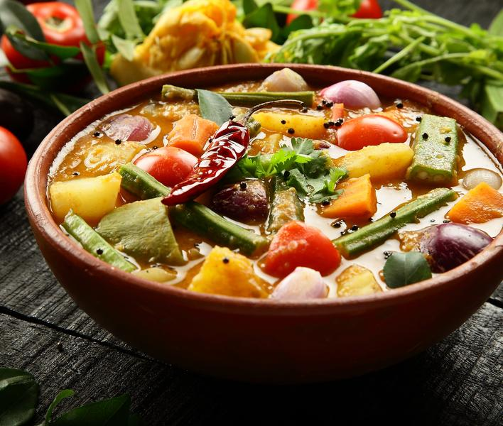
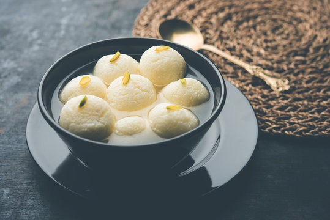

Thukpa
Ingredients
- Oil 2 tbsp , Onion 1/2 cup (chopped) , Ginger 1 inch piece(grated) , Garlic 6 to 8 cloves , Cabbage 1 cup (chopped) , Carrot 1/4 cup (chopped) , Mushroom 1/4 cup , (chopped) , Green chilli 1 to 2 (chopped) , Chicken 150 gms (cut in cubes) , Egg noodles 150 gms , Red chilli powder 1 tsp , Salt to taste , Lemon juice 2 tsp , Dhania leaves for garnishing.
steps
- Boil the noodles
- Heat oil in a pan, add onions and fry for about 2 min.
- Add ginger, garlic and fry it
- Add green chilli, mushroom, cabbage, carrot and fry for about 2 min.
- Add chicken with 4 cups of water, red chilli powder, salt and cook until chicken is done.
- Add boiled noodles and lemon juice and mix well.

DALMA
Ingredients
- 2 potato , 1 brinjal , 1 cup pumpkin , 1/2 cup arbi (colocasia root) , 1/2 green papaya , 2 sweet potato , 1 cup yam , 100 grams green beans , 1 radish,4 tomatoes , 2 green unripe bananas , 150 grams moong dal , 3 tablespoon grated coconut , 1 inch ginger , 1 tablespoon turmeric , 2 tablespoon ghee , 1 tablespoon cumin seeds , 2 bay leaf , salt as required , powdered jaggery , 3 cup water , 2 tablespoon coriander leaves .
steps
- Chop All The Vegetable
- Cook The Moong Dal Heat your container and add 3 glass of water.
- Put bay leaves, salt and turmeric powder into it let them boil.
- Then add the daal and cook well.
- Add All The Vegetables In The Cooked Daal
- After cooking the daal properly, add the vegetables and half cover it.
- After cooking add crushed ginger and jaggery After the vegetables get cooked, add grated coconut and cook for another 5-10 minutes.
- Heat ghee in a pan and then turn off the flame
- Add cumin seeds in the hot ghee, instantly pour it into the dal and cover completely for a minute.
- Then mix it and garnish with grated coconut and coriander leaves.

Paneer Tikka Roll
Ingredients
- 2 tbsp Curd , 2 tbsp Gram Flour , 1 tsp Ginger & Garlic Paste , 1 tsp Red Chilli Powder , 1 tsp Mustard Oil , 1/4 tsp Garam Masala Powder , 1/4 tsp Turmeric Powder , 1/2 Lemon Juice , Salt , 200 gms Paneer(cubes) , 2 tsp Oil Ingredients for Chapati: , Wheat Flour , Dough ,1/4 tsp Oil Ingredients for Paneer Tikka Roll: , Mayonnaise , Cabbage(shredded) , Onions(shredded) , Spring Onions(chopped) , Paneer Tikka , Lemon Juice , Salt.
Steps
- Take curd, gram flour, ginger-garlic paste, red chilli powder, mustard oil, garam masala powder, turmeric powder, lemon juice, salt, paneer cubes.
- Mix it all together . Now, add oil to the pan and let it heat.
- Add paneer cubes to it and saute it. Take the paneer tikka out in a bowl
- Now take the dough and with the help of wheat flour, start rolling it.
- Dry roast this over a pan; add oil to it and keep flipping it over.
- Once the chapatis are ready, keep it aside on a plate . Spread mayonnaise over the chapatis
- Now, add shredded cabbage, shredded onions, chopped spring onions, paneer tikka, and lemon juice.
- Add Salt, and wrap it nice & firm.

Rasgulla
Ingredients
- 1 Ltr Milk , 1/2 tsp Citric Acid , Water , 1/4 tsp Cornflour , Maida , 2 & 1/2 cups Sugar.
Steps
- Boil the milk and keep stirring periodically.Add citric acid to water and stir till all the granules have dissolved completely.Once the milk is curdled, let the paneer cool down in the water completely.
- Strain the cooled down panner in a cloth and hang it somewhere for an hour to drain out excess water naturally
- Knead the dough the cloth itself using wrist. . Add cornflour, maida and mix everything together . Add small pinch of baking powder and mix it again
- In a pan add sugar to water to make the sweet syrup by stirring continuously till the sugar dissolves completely for about 6 - 7 mins.
- Meanwhile make tight round balls of the paneer dough . Add water and bring the syrup to boil again and add the rasgulla balls for 5 mins
- Add water and maida mixed water slowly . Add some more water and boil for 5 more mins by stirring the rasgullas.
- Add more water and keep flipping them and let it boil for another 5 mins . Add 2 cups of water very slowly, boil for 2 more mins and turn off the flame
- Let them cool down in the syrup for at least 2 - 3 hrs.

Thekera Tengar Sorbot
Ingredients
- Dry Thekera Tenga- 4-5pieces , Water- 2 glasses , Sugar - 2 tsp , Salt- 1tsp
steps
- Wash the dry Thekera Tenga and soak it in 2 glass of water for 1-2 hours.
- Now remove the Thekera pieces from the water.
- Add sugar & salt in to the Thekera Tenga soaking water. Mix it well.
- It's ready to serve.If wish you can refrigerate it. At the time of serving you can add ice cubes.